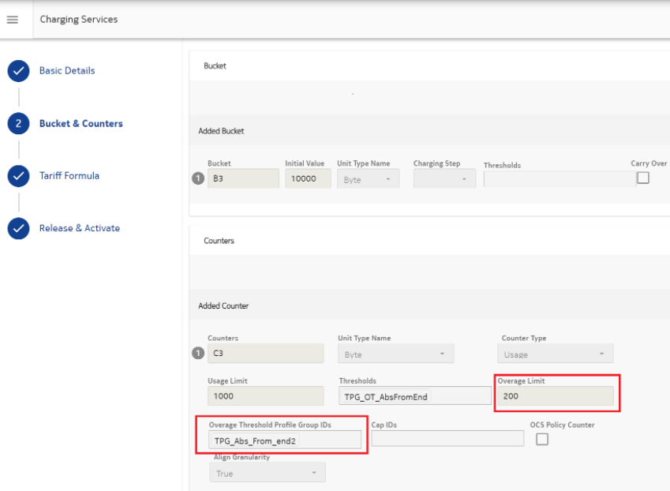

The Absolute from End (ABE) Threshold Profile Group (TPG) configuration for Overage Limit (OLI) can be done as follows.
In the Thresholds entity, configure the following ABE OLI thresholds for Absolute profile:

Following is the Charging Service configuration:
The counter has usage limit 1000 and overage limit 200 byte.
For this, the values are populated in the Threshold Context: ThresholdValue and ThresholdCrossingValue as follows:
- Threshold at 200: Threshold value is 200, threshold crossing value is 0, 1000 byte consumption.
- Threshold at 50: Threshold value is 50, threshold crossing value is 150, 1150 byte consumption.
If the consumption continues even after crossing overage limit, then the ThresholdValue and ThresholdCrossingValue as follows:
- Threshold at 200: Threshold value is 200, threshold crossing value is 0, 1200 byte consumption.
- Threshold at 50: Threshold value is 50, threshold crossing value is 150, 1350 byte consumption.
When the current value or overage limit in counter instance is updated through REST API, reset of Overage ABE is also done.